01 Nico Hipster
AntesCorregido
Problema: Las gafas ocultaban los ojos y la boca se perdía en la barba.
Corrección: Lentes abiertos, hueco de boca en la barba y mano ajustada a la nueva barbilla.
02 Ren Gótica
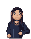
Antes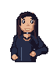
CorregidoProblema: La mano de cintura se leía como un puño y el pelo no seguía el nuevo contorno facial.
Corrección: Palma con pulgar apoyado en la cintura; pelo y orejas adaptados al ancho de la cara.
03 Alex Techwear
Antes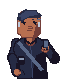
Corregido Problema: El móvil quedaba encima de la mano sin una sujeción clara.
Corrección: Móvil detrás del pulgar y los dedos; mirada orientada hacia el teléfono.
04 Dani Fútbol
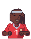
Antes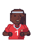
CorregidoProblema: Las mangas llegaban demasiado lejos por el brazo y las manos en cintura eran ambiguas.
Corrección: Mangas cortas con brazo descubierto; palmas diferenciadas apoyadas a ambos lados.
05 Beto Skater
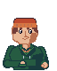
Antes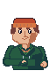
CorregidoProblema: La mano parecía descansar sobre la sudadera en vez de entrar al bolsillo.
Corrección: Muñeca bajo el borde del bolsillo y una pequeña parte de piel visible en la abertura.
06 Vale Punk
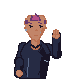
Antes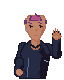
CorregidoProblema: El saludo tenía dedos poco definidos y el pelo usaba un ancho ajeno al rostro.
Corrección: Cuatro dedos extendidos y pulgar lateral en la silueta; pelo ajustado a las sienes.
07 Mar Grunge
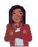
Antes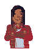
CorregidoProblema: Las manos cruzadas parecían dos puños superpuestos y las orejas no seguían la cara estrecha.
Corrección: Orden de brazos definido, palmas apoyadas sobre el brazo opuesto y orejas pegadas al rostro.
08 Sol Indie
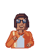
Antes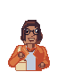
CorregidoProblema: Sujetaba una correa sin bolso y las gafas tapaban los ojos.
Corrección: Bolso con dos puntos de unión, correa sujeta por la mano y monturas con ojos visibles.
09 Sam Streetwear
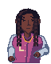
Antes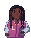
CorregidoProblema: La mano en cintura no mostraba bien el apoyo ni el pulgar.
Corrección: Palma orientada hacia la cintura, separación de dedos y puño de manga definido.
10 Ivo Metal
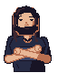
Antes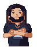
CorregidoProblema: Las mangas parecían largas, las manos cruzadas eran confusas y la barba ocultaba la boca.
Corrección: Mangas cortas, antebrazos descubiertos, manos apoyadas y boca separada de la barba.
11 Luz Kawaii
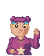
Antes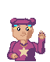
CorregidoProblema: La estrella bajaba demasiado hacia el corte inferior y el saludo era poco legible.
Corrección: Estrella recolocada en el pecho y silueta de saludo con dedos y pulgar separados.
12 Noa Rave
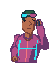
Antes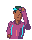
CorregidoProblema: La mano tocaba un auricular añadido aunque el accesorio eran unos goggles.
Corrección: Eliminado el auricular; brazo y mano dirigidos a la montura de los goggles.
13 Teo Normcore
AntesCorregido
Problema: La correa del tote no terminaba en un bolso visible y el gesto no correspondía al accesorio.
Corrección: Tote completo con uniones; la mano pasa a sujetar su correa.
14 Mai Coquette
AntesCorregido
Problema: Las dos manos juntas se fundían en una sola mancha de piel.
Corrección: Muñecas escalonadas, dos palmas identificables y línea de separación.
15 Jules Art school
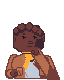
Antes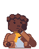
CorregidoProblema: El codo de la mano en barbilla se cortaba en el borde inferior y el puño se confundía con la mano.
Corrección: Codo completo por encima del corte y puño claro que separa manga y mano.
16 Moren Athleisure
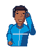
Antes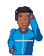
CorregidoProblema: El ajuste de audífonos añadía otra pieza sobre la mano y duplicaba visualmente el auricular.
Corrección: Conservado el auricular de la cabeza; la mano llega a esa pieza, sin duplicarla.
17 Chema Fútbol retro
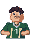
Antes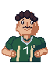
CorregidoProblema: Las mangas largas de hecho contradecían la camiseta y las manos en cintura no se entendían.
Corrección: Mangas recortadas, brazos descubiertos y palmas apoyadas a ambos lados.
18 Ari Cyber
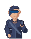
Antes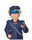
CorregidoProblema: El teléfono quedaba delante de la mano sin dedos que lo sujetaran.
Corrección: Pulgar y punta de dedos sobre los bordes del móvil; muñeca alineada con el agarre.
19 Ros Workwear
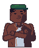
Antes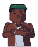
CorregidoProblema: El cruce de brazos se perdía por el poco contraste entre piel, manga y manos.
Corrección: Palmas sobre los antebrazos, orden de solapamiento y puños claros como separación.
20 Andy Rockabilly
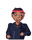
Antes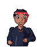
CorregidoProblema: La mano en cintura parecía un puño pegado a la chaqueta.
Corrección: Palma apoyada con pulgar y uniones de manga y muñeca diferenciadas.
21 Fer Dark academia
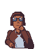
Antes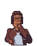
CorregidoProblema: Las gafas eran opacas y el codo de la pose de barbilla bajaba hasta el corte.
Corrección: Montura abierta, mano ajustada a la mandíbula y codo recogido dentro del encuadre.
22 Leo Surf
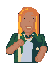
Antes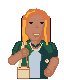
CorregidoProblema: La correa no tenía bolso y la camisa cubría demasiado brazo.
Corrección: Bolso conectado a la correa, mano sujetándola y mangas cortas con piel visible.
23 Pao Sneakerhead
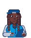
Antes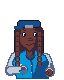
CorregidoProblema: La mano quedaba encima de la chaqueta sin entrar claramente en el bolsillo.
Corrección: Abertura inclinada que tapa parte de la mano y muñeca colocada bajo ese borde.
24 Cris Vintage
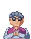
AntesCorregidoProblema: Los lentes ocultaban los ojos, las manos se fundían y los codos bajaban demasiado.
Corrección: Lentes abiertos, dos manos separadas por contorno y codos completos dentro del encuadre.